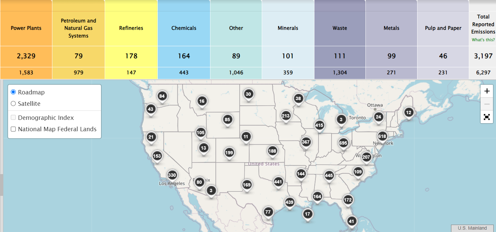

Back
Data for 2000-2005
This is the data for the years 2000 to 2005.
US Data from 2000-2005
This is the data for the years 2000 to 2005.

The average U.S. temperature increased by approximately 1°F (0.6°C) from 1901 to 2000, with significant warming observed in the early 21st century. The years 2001-2005 were consistently among the warmest on record.
• CO2 Emissions: In 2005, U.S. carbon dioxide (CO2) emissions from fossil fuel combustion reached about 6 billion metric tons, a 1.2% increase from 2004, according to the U.S. Energy Information Administration (EIA).
• Global Emissions: The U.S. was responsible for approximately 25% of global CO2 emissions during this period, although its share began to decline as emissions from developing countries rose.
Heat Waves: The summer of 2003 saw one of the hottest years on record for many parts of the U.S., with temperature anomalies exceeding 10°F (5.5°C) in some regions.
Greenhouse Gas Emissions Overview
1. Total Emissions:
o In 2005, total U.S. greenhouse gas emissions were approximately 7,260 million metric tons of CO2 equivalent, representing an increase of about 1.6% from the previous year (2004).
2. CO2 Emissions:
o Carbon dioxide (CO2) was the largest contributor to U.S. greenhouse gas emissions, accounting for about 84% of total emissions in 2005.
o Emissions from fossil fuel combustion in 2005 reached approximately 6 billion metric tons of CO2.